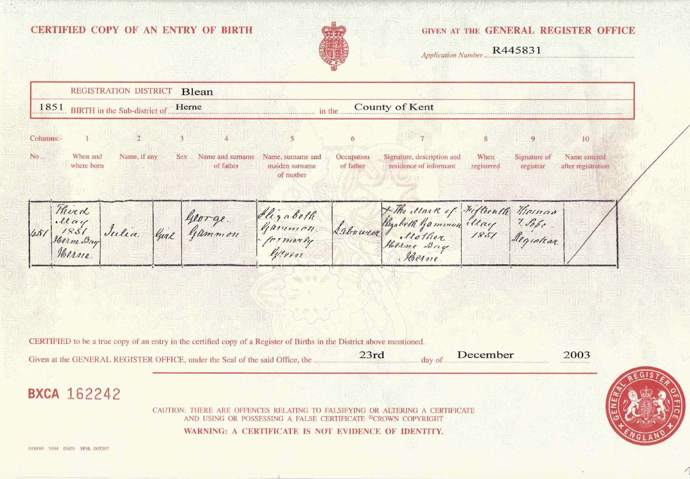

Mary Julia Mount (née Gammon) 1851 - 1927
[ Home ] | [ Calendar ] | [ Surnames Index ] | [ Errors ] | [ Family History ]Mary Gammon, the wife of James Mount (the first cousin four-times-removed on the mother's side of Nigel Horne), was born in Herne Bay, Kent, England on 3 May 18511 and married James (a stoker at gasworks with whom she had 7 children: Harry, Edward Thomas, Rose E, Jane, Stephen, Ernest and Frederick) at Christ Church in Herne Bay on 30 Apr 18762.
During her life, she was living at 7 Salts Lane in Herne Bay on 3 Apr 18814, at 24 King Street in Herne Bay on 5 Apr 18911, and at 49 King Street in Herne Bay on 31 Mar 19013 and on 2 Apr 19115.
She died on 25 May 1927 in Herne Bay.
Children
- Harry was born in 1877
- Edward Thomas was born on 3 Mar 1879
- Rose E was born in 1881
- Jane was born in 1884
- Stephen was born in 1887
- Ernest was born in 1889
- Frederick was born in 1893
Citations
- 1891 England, Wales & Scotland Census - Findmypast (was age 38 and the wife of the head of the household)
- Kent, Canterbury Archdeaconry Marriages - Findmypast
- 1901 England, Wales & Scotland Census - Findmypast (was age 48 and the wife of the head of the household)
- 1881 England, Wales & Scotland Census - Findmypast (was age 29 and the wife of the head of the household)
- 1911 Census for England & Wales - Findmypast (was age 56 and the wife of the head of the household)
Media
Mary Julia Gammon - Birth Certificate

Kent, Canterbury Archdeaconry marriages - GBPRS/CANT/M/97073915/2
England & Wales marriages 1837-2005 - BMD/M/1876/2/AZ/000102/273
1901 England, Wales & Scotland Census - GBC/1901/0006244915
1911 Census for England & Wales - GBC/1911/RG14/04354/0131/2
Family Tree

Map
Generated by ged2site. Last updated on Jul 3, 2024
Known Issues
Death date (25 May 1927) has no citations
No records of living with anyone